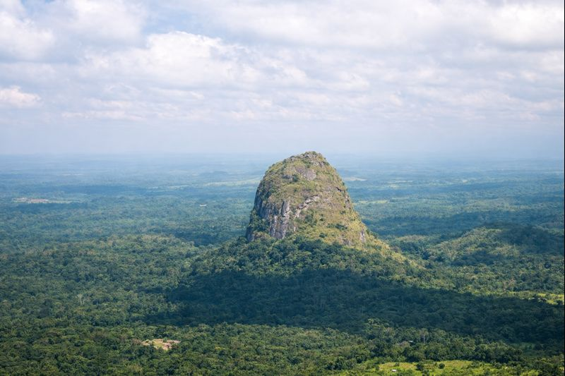

Freetown Est
55k
Île de Bunce
Site historique majeur de la traite négrière (UNESCO Tentative)

RetourLe pays du "Lion Mountain" et des plages de rêve infinies
La Sierra Leone est l'un des trésors les plus éclatants de l'Afrique de l'Ouest, offrant un mélange rare de beauté naturelle brute et d'histoire profonde. Connue pour ses plages de sable blanc d'une pureté exceptionnelle, comme River No. 2 et Tokeh, elle abrite également des forêts tropicales denses où règnent les chimpanzés et une faune unique. Freetown, sa capitale vibrante au pied des montagnes, témoigne d'un passé lié à la liberté, tandis que l'île de Bunce raconte avec émotion l'histoire de la traite transatlantique. C'est une destination d'une résilience admirable, prête à émerveiller les voyageurs en quête d'authenticité et de paradis préservés.
Explorez les 15 merveilles incontournables de "Salone"
Site historique majeur de la traite négrière (UNESCO Tentative)

Considérée comme l'une des plus belles plages d'Afrique

Protection des chimpanzés au cœur d'une forêt luxuriante

Eaux turquoises et resorts de luxe pour un séjour paradisiaque

Sanctuaire de primates et biodiversité exceptionnelle (UNESCO Tentative)

Symbole historique de la liberté et de l'indépendance

Plongée, pêche et histoire coloniale sur cet archipel paisible

Savane et forêt, refuge pour les éléphants et les hippopotames pygmées

Le plus haut sommet de Sierra Leone (1 945m) pour la randonnée

Le spot de surf par excellence avec une ambiance bohème unique

La deuxième plus grande ville, riche en culture Mendé

Porte d'entrée vers les zones minières et la forêt de Gola
Plage paisible idéale pour admirer le coucher du soleil
Espaces sauvages et plages désertes à l'extrême sud du pays
Trésors culturels et histoire des peuples de Sierra Leone
La terre de la liberté et de l'harmonie Krio.
L'histoire de la Sierra Leone est intimement liée à la fin de l'esclavage et à la fondation de Freetown comme foyer pour les esclaves libérés. Cette identité unique s'exprime à travers la culture Krio, mélange fascinant d'influences africaines et européennes. Le pays est fier de son harmonie religieuse exemplaire et de ses traditions tribales riches, notamment celles des Mende et des Temne. De l'élégance du Cotton Tree aux danses masquées secrètes, la Sierra Leone offre une profondeur culturelle qui vibre dans chaque rue de ses villes colorées.
Le symbole vivant de la liberté où les premiers esclaves libérés ont prié à leur arrivée.
Une langue et une identité vibrantes issues de la fusion des peuples revenus de la diaspora.
L'histoire minière complexe qui a façonné l'économie et le destin de la province de l'Est.
Les traditions Poro et Sande qui perpétuent les rites de passage et la sagesse ancestrale.

L'artisanat authentique de Salone. Des tissus Gara teints à la main aux sculptures en bois raffinées.
 Tissage
Tissage
Textile traditionnel coloré avec des teintures naturelles (indigo) selon des techniques ancestrales.
 Art
Art
Figurine finement sculptée par les artisans de Kenema, représentant la faune ou la vie quotidienne.
 Utile
Utile
Paniers et sets de table robustes tissés avec des fibres de palmier, durables et élégants.
Savon artisanal purifiant fabriqué à base de cendres de plantes et d'huiles végétales locales.
Huile pressée à froid issue des cocoteraies de la côte, idéale pour la peau et les cheveux.
Colliers et bracelets colorés faits à la main, portés lors des cérémonies traditionnelles.

Aberdeen, Freetown

Tokeh Beach, Luxe

Lumley Beach, Freetown

Aberdeen, Bord de Mer

Hill Station, Vue Panoramique

Aberdeen, Freetown
La cuisine de Salone est un festin épicé mettant à l'honneur les feuilles vertes, les tubercules et les trésors de l'Atlantique.
Feuilles de manioc pilées et mijotées avec du poisson fumé ou de la viande, le plat roi.
Version locale savoureuse du riz rouge africain, souvent servie avec du poulet grillé.
Une soupe crémeuse à base d'arachides, riche en saveurs et très nutritive.
Poisson frit ou grillé servi avec une sauce tomate pimentée et du riz.
Pain sucré à base de farine de riz et de bananes mûres, un délice pour le goûter.
Feuilles de jute finement hachées et cuisinées, servies avec du riz.
Beignets de haricots frits, croustillants à l'extérieur et fondants à l'intérieur.
Boisson artisanale très forte au gingembre, rafraîchissante et tonique.
Infusion froide de fleurs d'hibiscus, sucrée et parfumée.
Papayes géantes, mangues et bananes "Ladies Finger" d'une douceur exceptionnelle.
La bière blonde locale emblématique, parfaite au bord de l'eau.
Bouillon de poisson ou de viande très pimenté et médicinal.
Découvrez l'énergie vibrante de la Sierra Leone à travers ses carnavals et ses fêtes traditionnelles.
Grand défilé de lanternes géantes et de chars colorés pour célébrer l'Aïd ou les fêtes nationales.
Célébrations massives le 27 avril avec défilés, danses et musique dans tout le pays.
Festival célébrant la musique locale et la mode sur la plage de Lumley (Décembre).
C'est la période idéale pour les plages et les parcs nationaux. Le ciel est dégagé et l'humidité est plus supportable, surtout entre décembre et février.
Les averses peuvent être très intenses (août est le mois le plus pluvieux). La nature est cependant verdoyante et luxuriante, idéale pour les photographes de paysage.
La Sierra Leone est l'un des pays les plus sûrs d'Afrique de l'Ouest. Vigilance normale requise dans les zones fréquentées de Freetown.
Traitement antipaludéen indispensable. Vaccin Fièvre Jaune obligatoire. Buvez exclusivement de l'eau en bouteille.
Visa obligatoire. Peut être obtenu à l'arrivée (Visa on arrival) pour de nombreuses nationalités. Vérifiez les conditions en ligne.
Le Leone (SLL). Le change est facile à Freetown. Les cartes bancaires sont de plus en plus acceptées dans les grands hôtels.
Expert Nature & Faune
Lamin est un passionné des primates et de la forêt de Gola. Il vous fera découvrir la richesse écologique du pays.
Experte Histoire & Patrimoine
Spécialiste de l'île de Bunce et de l'histoire Krio, Sarah vous racontera le destin fascinant de Freetown.
Guide Plages & Surf
Natif de Bureh, Ibrahim connaît chaque spot de la côte et vous guidera vers les plages les plus secrètes de Salone.